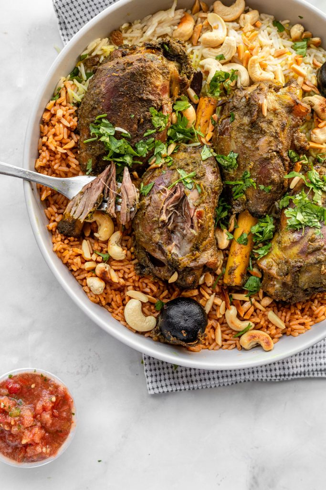
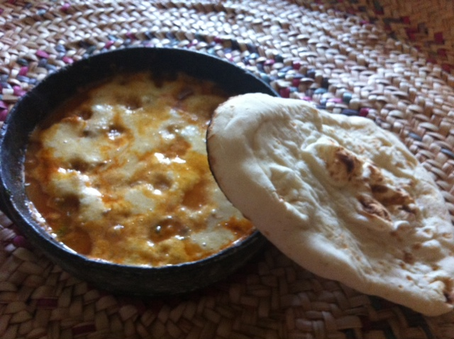
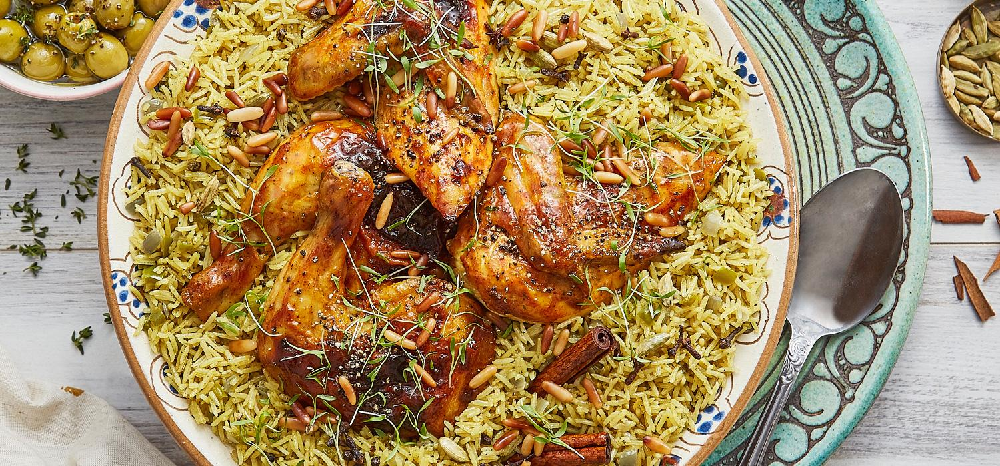
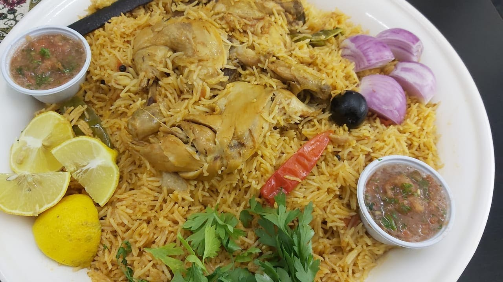
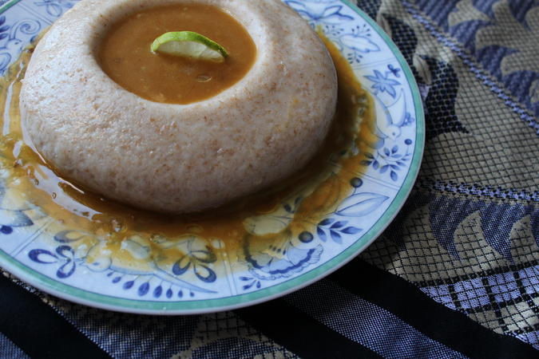
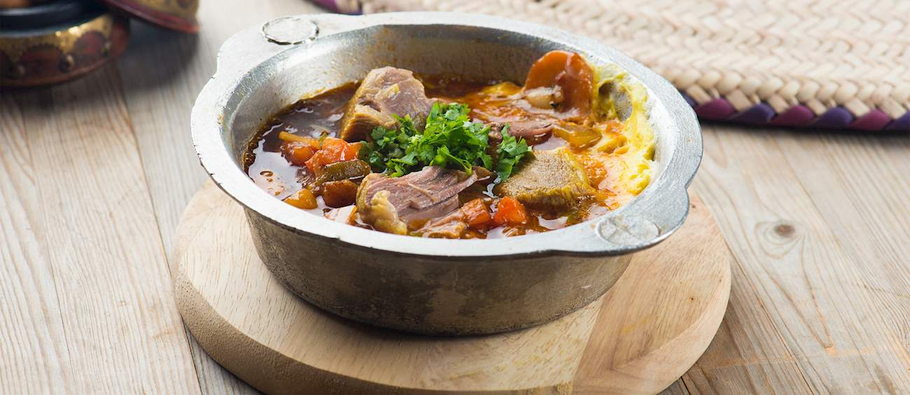
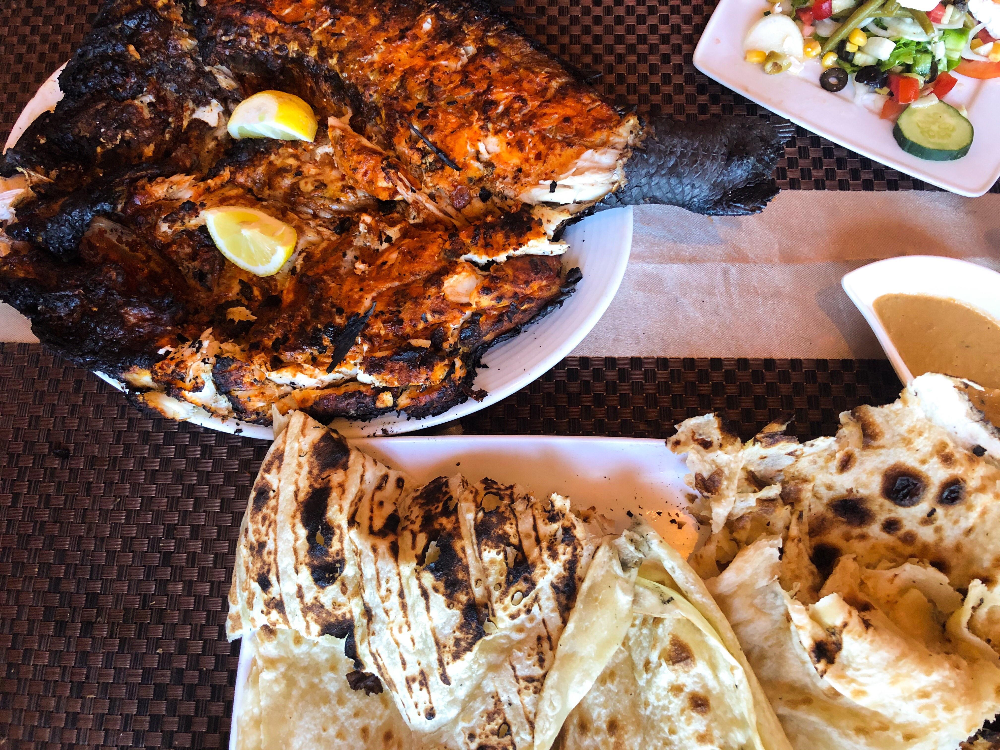
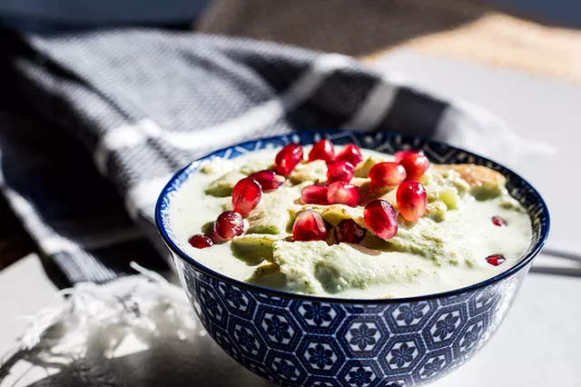

HaneethSlow Roasted Lamb that’s marinated in a mixture of spices and slow roasted until the meat is so tender it nearly falls off the bone. It’s usually served with basmati rice (which is usually also spiced but can be plain). It’s a very typical celebratory dish served at festivals and weddings, and very common in Yemeni restaurants around the world. |
SaltaSaltah is a traditional Yemeni soup that consists of broth with meat and/or vegetables and that is topped with a fenugreek froth called hilbeh. It was invented when Turkish troops tried to invade Yemen. Salta, litteraly meaning to combine small peices of stuff, was originally left overs of what ever food could be salvaged during war downtime, mixed up and heated in broth. It has become a staple of Yemeni Culture. |
MandiMandi is a traditional dish that originated from Hadhramaut, Yemen, consisting mainly of meat and rice with a special blend of spices, cooked in a pit underground. |
KabsaKabsa, a one-pot dish consisting of rice, meat and spices, is a food commonly served to guests. It is considered a national dish in the many Arab States of the Persian Gulf including Yemen. Its name comes from the Arabic word for squeeze because all the ingredients are literally squeezed into a single pot. Kabsa is often served as the main dish at Eid al-Fitr, Eid al-Adha, weddings and other special events. |
AseedAsida/Aseeda is an arab-style, extra-large, high energy (read: high carbohydrate) dumpling which is eaten with the hands in a communal style. It can be eaten sweet or savory and can be made with a variety of flours. Asida sticks to your stomach and is traditionally eaten throughout the arab world including the gulf countries and the sahel region in Africa. Its simple preparation and filling quality would have been essential to the nomadic lifestyle of the Bedouins which required filling meals on the go. |
MaraqMaraq is a delicate and aromatic Yemeni lamb (or chicken) broth soup that is traditionally served at the beginning of the meal. Each family and restaurant makes a different maraq stock, so it may be simmered with garlic, turmeric, onions, coriander, pepper, or cinnamon, depending on personal preferences. |
ZubaidiRight off the coast of Aden, this fresh and savoury fish is grilled and cooked with tasty red spices that provides is auromic smell and unique look. |
ShaffutShafoot is a spicy and savory yogurt salad dish which is usually eaten during the lunchtime meal, especially in Sanaa. Its made from a base of the spongy sourdough lahooh bread and served with a side of greens and zahawiq. |